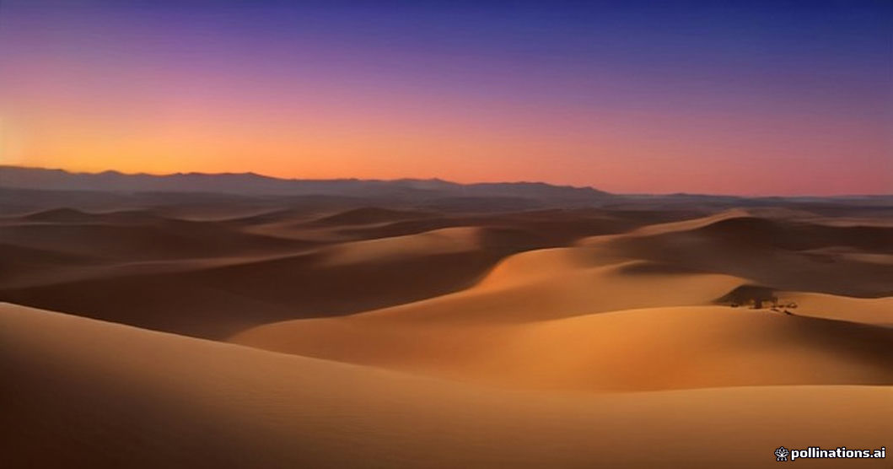

Late December is one of the busiest periods of the year in Merzouga and Erg Chebbi. Travelers gather to spend Christmas Eve under the stars or count down to the New Year atop the dunes. While watching a winter sunset over golden sand dunes is a memorable experience, the peak week from December 22 to January 3 introduces operational pressures and severe weather realities that glossier travel brochures rarely mention.
Between night temperatures that regularly drop below freezing and camp capacity stretched to its absolute limit, a successful holiday trip comes down to realistic planning and early logistics. Here is a clear breakdown of holiday surcharges, crowd patterns, cold weather realities, and trade-offs so you can decide if a holiday desert journey aligns with your travel style.
The Weather Reality: Freezing Nights and Short Days
Daytime in late December is mild and crisp, typically ranging from 14°C to 18°C (57°F–64°F) with bright, clear skies. However, as soon as the sun dips below the horizon, temperatures plummet rapidly. Nighttime temperatures inside the Erg Chebbi dune field routinely reach 0°C to -3°C (32°F–26°F) between midnight and dawn.
Standard canvas tent walls hold minimal thermal heat. Even in luxury camps with indoor heating units, generator limits or solar battery drain often mean heating cuts out during the coldest early morning hours. Packing proper thermal baselayers, fleece jackets, wool socks, and warm headwear is essential. For detailed clothing recommendations, consult our guide on what to wear for desert travel.
Holiday Surcharges and Peak Pricing Models
Demand outstrips available high-quality driver-guides, 4x4 vehicles, and boutique camp beds during the fortnight surrounding New Year’s Eve. Expect a 20% to 40% increase in total tour pricing compared to November or February rates. Camps impose mandatory supplement fees for Christmas Eve and New Year’s Eve dinners to cover festive menus, traditional live music, and additional firewood supplies.
Vehicle supply across Marrakesh and Fes tightens significantly. Booking three to six months in advance is usually required to secure experienced drivers and comfortable private transport. Last-minute bookings made within two weeks of Christmas often face inflated rates for leftover vehicles or crowded shared transfers.
Managing Dune Crowds and Sunset Bottlenecks
Erg Chebbi spans roughly 28 kilometers from north to south, but the main access tracks near Merzouga village become congested between 4:00 PM and 6:00 PM. High-density areas near large hotel complexes experience lines of camels, engine noise from quad bikes, and hundreds of visitors climbing the central ridge for sunset views.
To enjoy a quieter desert atmosphere, consider camps located along the deeper eastern or northern perimeters of the dune system. Alternatively, choosing a private 4x4 itinerary allows your driver to adjust timings, reaching the dunes earlier in the afternoon or focusing on early morning sunrise excursions when most visitors remain inside their tents.
Tichka Pass Snow and Mountain Transit Logistics
If starting your tour in Marrakesh, your route crosses the High Atlas Mountains via the Tizi n'Tichka pass at 2,260 meters elevation. Late December occasionally brings mountain snowfall or early morning black ice. While road clearance crews work efficiently, winter weather delays of one to three hours can disrupt your driving schedule.
Building flexibility into your schedule is essential during this season. For safety guidelines on winter mountain transit, review our overview of Tichka Pass winter snow conditions. Allowing extra transit time ensures you reach camp before dark without rushing through icy mountain roads.
| Factor | Regular Winter (Nov & Jan) | Peak Holiday (Dec 22 – Jan 3) |
|---|---|---|
| Night Temperature | 1°C to 5°C (34°F–41°F) | -3°C to 2°C (26°F–36°F) |
| Camp Pricing | Standard seasonal rates | 20%–40% holiday surcharge |
| Minimum Stay Terms | 1 night permitted | Often 2-night minimums or non-refundable deposits |
| Crowd Density | Moderate to low | Maximum capacity at main dunes |
| Booking Lead Time | 2–4 weeks in advance | 2–5 months in advance |

Illustration, not a photograph — for the real thing, you'll have to stand on the ridge yourself.
Quick answers
A few follow-up questions travelers ask about this.
Is New Year's Eve in the Sahara loud or crowded?
It depends on camp size and location. Larger camps hold organized festive dinners with live Gnawa music, campfires, and group celebrations until about 1:00 AM. Smaller private camps on the outer edges of the dunes maintain a far quieter environment.
Are holiday surcharges refundable if weather delays our arrival?
Most desert camps enforce strict non-refundable policies for December 24, 25, 31, and January 1 due to high demand. We strongly recommend holding travel insurance that covers weather-related transit delays.
Is the camel trek colder at sunset or sunrise during late December?
Sunrise is significantly colder. The desert reaches its lowest temperature right before dawn, often with frost visible on the sand. Sunset is milder because the dunes retain warmth from afternoon sunlight.
Planning your own route?
Tell us your dates and what matters to you — we'll answer with a straight recommendation, not a brochure.
Send an inquiry See the itineraries